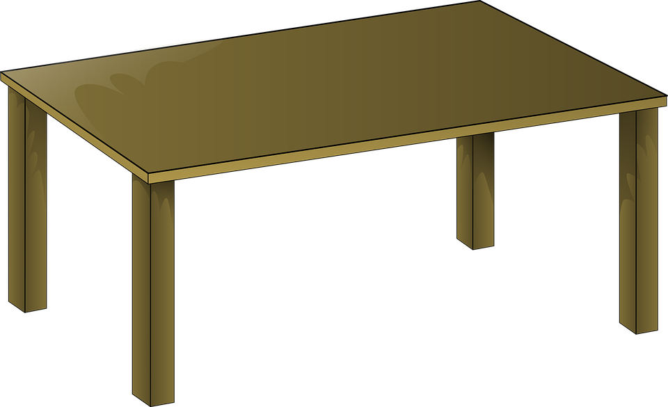
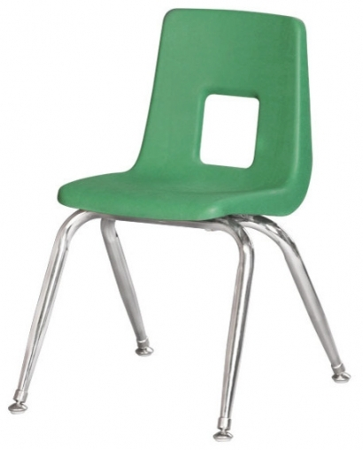
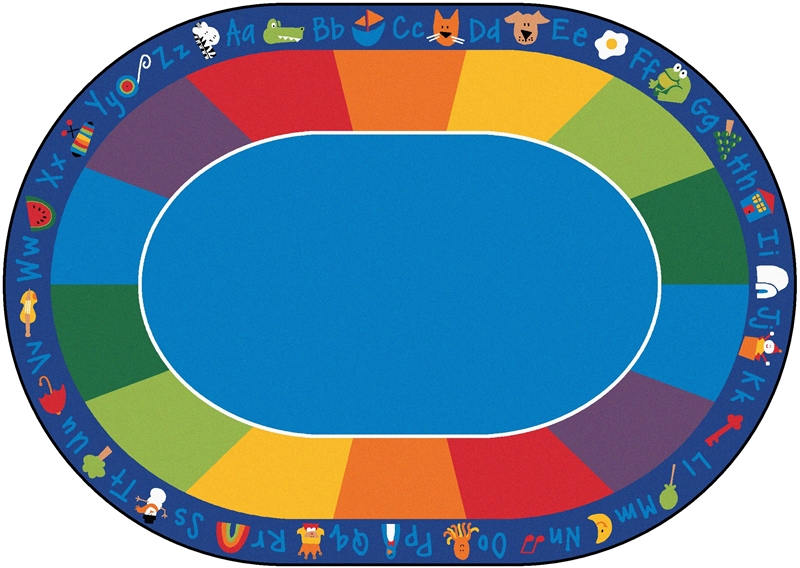
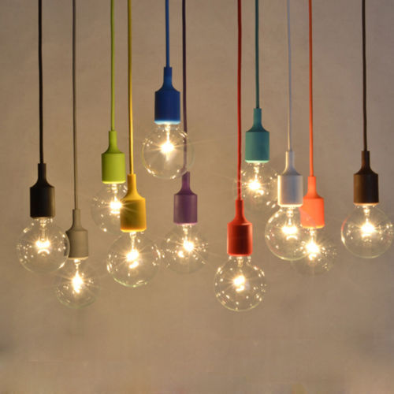
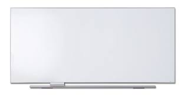
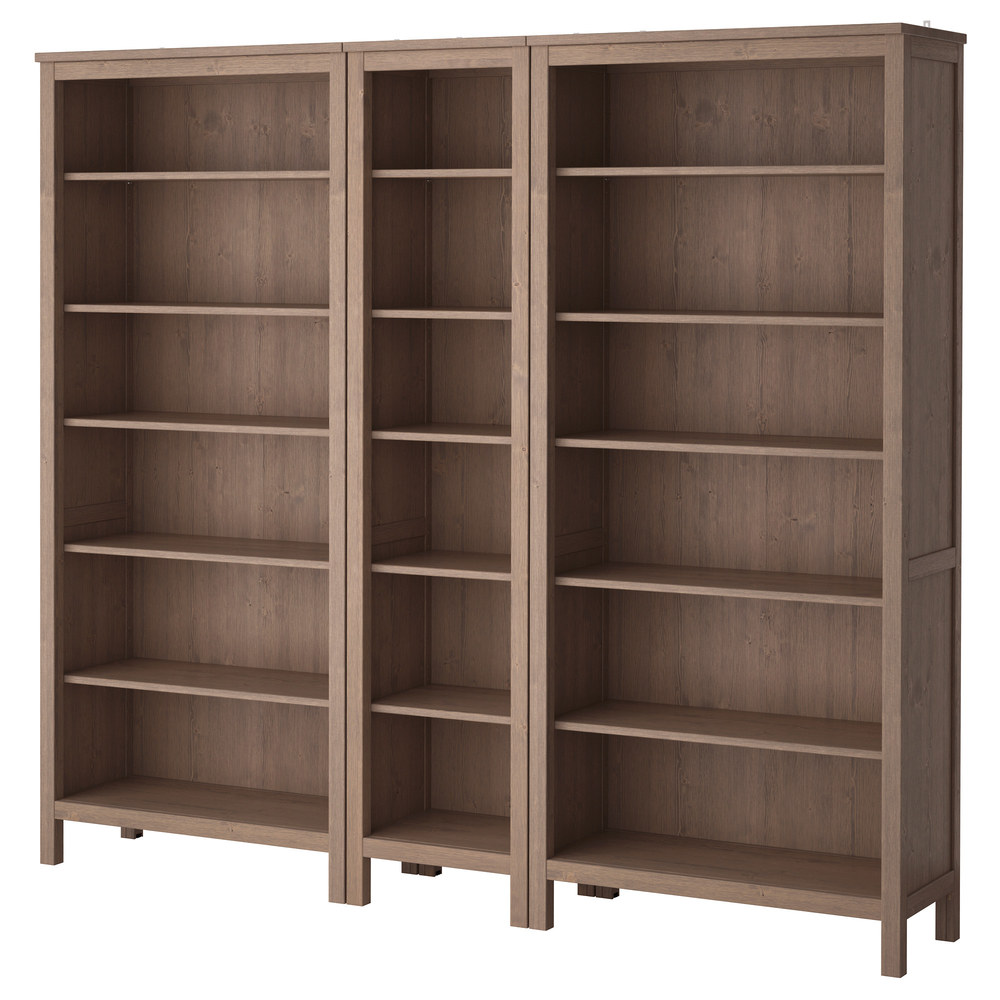
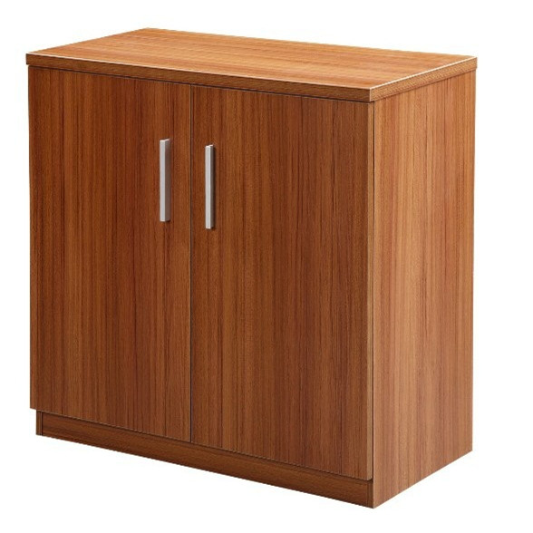

教室里有什么？
What's in the classroom?
Part I Vocabulary
教 | 室 |
jiào | shì |
里 |
lǐ |
有 |
yǒu |
没 | 有 |
méi | yǒu |
什 | 么 |
shén | me |

老 | 师 |
lǎo | shī |
学 | 生 |
xué | shēng |

桌 | 子 |
zhuō | zi |

椅 | 子 |
yǐ | zi |

地 | 毯 |
dì | tǎn |

灯 |
dēng |

白 | 板 |
bái | bǎn |
钟 | 表 |
zhōng | biǎo |
书 |
shū |

书 | 架 |
shū | jià |

柜 | 子 |
guì | zi |
电 | 脑 |
diàn | nǎo |
Part II Phrases
+ |
教 | 室 | 里 |
jiào | shì | lǐ |
有 | 老 | 师 |
yǒu | lǎo | shī |
有 | 学 | 生 |
yǒu | xué | shēng |
有 | 桌 | 子 |
yǒu | zhuō | zi |
有 | 椅 | 子 |
yǒu | yǐ | zi |
有 | 地 | 毯 |
yǒu | de | tǎn |
有 | 灯 |
yǒu | dēng |
有 | 白 | 板 |
yǒu | bái | bǎn |
有 | 钟 | 表 |
yǒu | zhōng | biǎo |
有 | 书 |
yǒu | shū |
有 | 书 | 架 |
yǒu | shū | jià |
有 | 柜 | 子 |
yǒu | guì | zi |
有 | 电 | 脑 |
yǒu | diàn | nǎo |
没 | 有 | 老 | 师 |
méi | yǒu | lǎo | shī |
没 | 有 | 学 | 生 |
méi | yǒu | xué | shēng |
没 | 有 | 桌 | 子 |
méi | yǒu | zhuō | zi |
没 | 有 | 椅 | 子 |
méi | yǒu | yǐ | zi |
没 | 有 | 地 | 毯 |
méi | yǒu | de | tǎn |
没 | 有 | 灯 |
méi | yǒu | dēng |
没 | 有 | 白 | 板 |
méi | yǒu | bái | bǎn |
没 | 有 | 钟 | 表 |
méi | yǒu | zhōng | biǎo |
没 | 有 | 书 |
méi | yǒu | shū |
没 | 有 | 书 | 架 |
méi | yǒu | shū | jià |
没 | 有 | 柜 | 子 |
méi | yǒu | guì | zi |
没 | 有 | 电 | 脑 |
méi | yǒu | diàn | nǎo |
Part III Sentences
教 | 室 | 里 | 有 | 老 | 师 |
jiào | shì | lǐ | yǒu | lǎo | shī |
教 | 室 | 里 | 有 | 学 | 生 |
jiào | shì | lǐ | yǒu | xué | shēng |
教 | 室 | 里 | 有 | 桌 | 子 |
jiào | shì | lǐ | yǒu | zhuō | zi |
教 | 室 | 里 | 有 | 椅 | 子 |
jiào | shì | lǐ | yǒu | yǐ | zi |
教 | 室 | 里 | 有 | 地 | 毯 |
jiào | shì | lǐ | yǒu | de | tǎn |
教 | 室 | 里 | 有 | 灯 |
jiào | shì | lǐ | yǒu | dēng |
教 | 室 | 里 | 有 | 白 | 板 |
jiào | shì | lǐ | yǒu | bái | bǎn |
教 | 室 | 里 | 有 | 钟 | 表 |
jiào | shì | lǐ | yǒu | zhōng | biǎo |
教 | 室 | 里 | 有 | 书 |
jiào | shì | lǐ | yǒu | shū |
教 | 室 | 里 | 有 | 书 | 架 |
jiào | shì | lǐ | yǒu | shū | jià |
教 | 室 | 里 | 有 | 柜 | 子 |
jiào | shì | lǐ | yǒu | guì | zi |
教 | 室 | 里 | 有 | 电 | 脑 |
jiào | shì | lǐ | yǒu | diàn | nǎo |